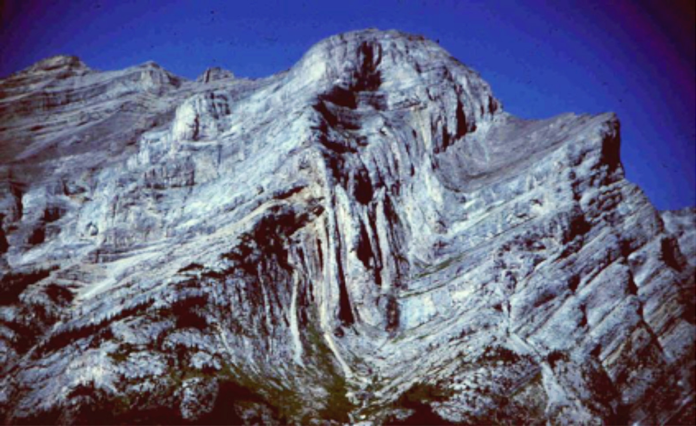

are examples of table land. Some plateaus are formed following successive flow of lava, erupting from the interior of the Earth. Such plateaus are known as lava plateaus. Examples include the Deccan plateau in India, Columbia and Snake plateau in the United States of America. Plateaus, which are surrounded by a higher land adjoining mountain, are called intermontane plateaus. Examples of intermontane plateaus are Bolivian and Tibetan plateaus that lie between fold mountain ranges of the Andes in South America, Kunlun Shan and the Himalayas in Asia.
Mountains
A mountain is part of the earth’s surface that rises abruptly to a greater height, usually above 300 metres from the surrounding level. There are four major types of mountains. These are Fold Mountains, Block Mountains, volcanic mountains, and residual mountains. These mountains are categorised based on the way they were formed.
(a) Fold mountains
Fold Mountains are features formed mainly by the process of folding or wrinkling of the upper parts of the earth’s crust due to compressional forces. Major Fold Mountains in the world include the Himalayas in Asia, the Rockies and Appalachians in North America, and the Andes in South America. Others are the Alps in Europe, the Atlas in North Africa, and Cape ranges in South Africa (Figure 4.4).
